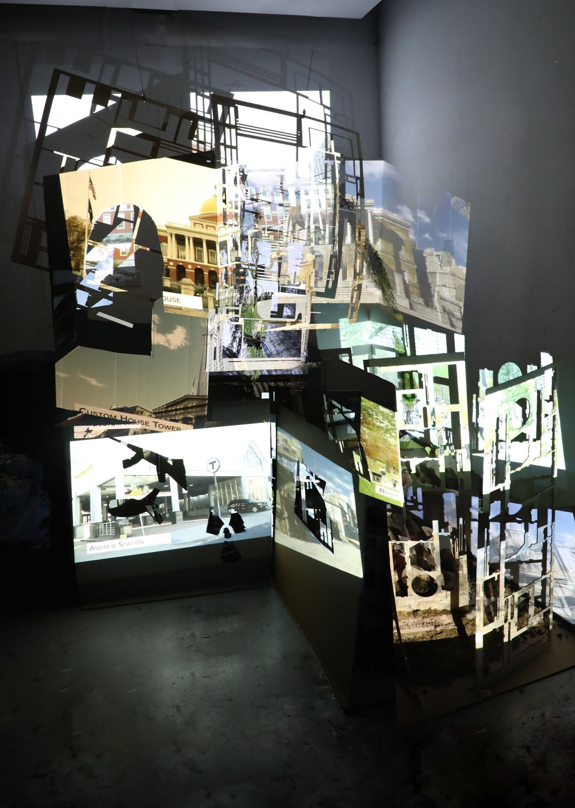
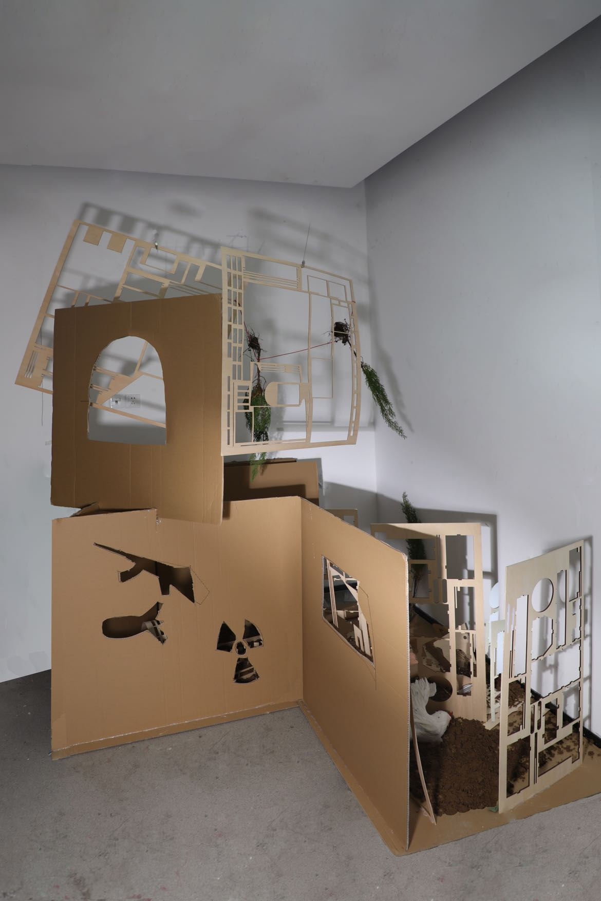
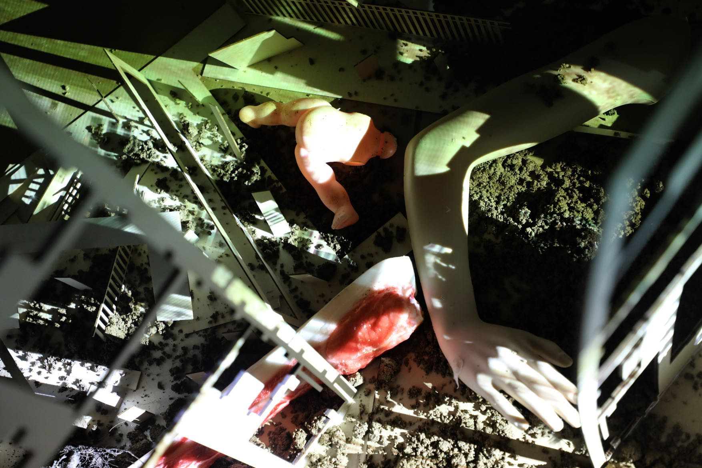
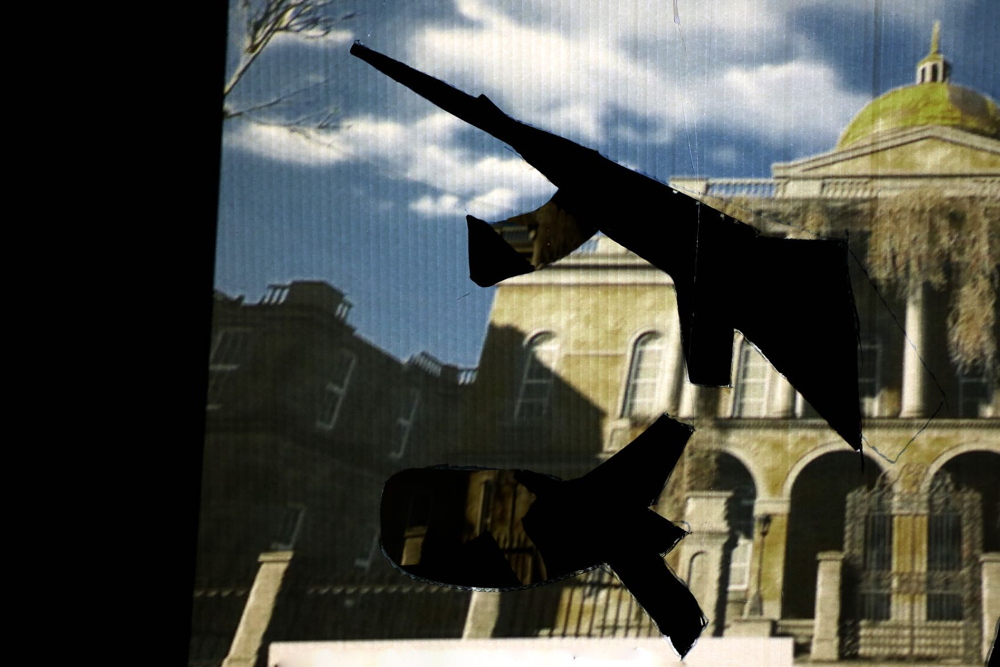

Nuke Town
The Junction of Civilization and Desolation
2021 · Video installation · Wood panels, soil, pine trees, mannequins, projection

Nuke Town imagines a place between civilization and desolation. Cut wooden panels, soil, trees and mannequin fragments form a broken city. Projections bring images of everyday places into contact with fictional nuclear-war landscapes, asking how close the world we inhabit is to the ruins we imagine.


